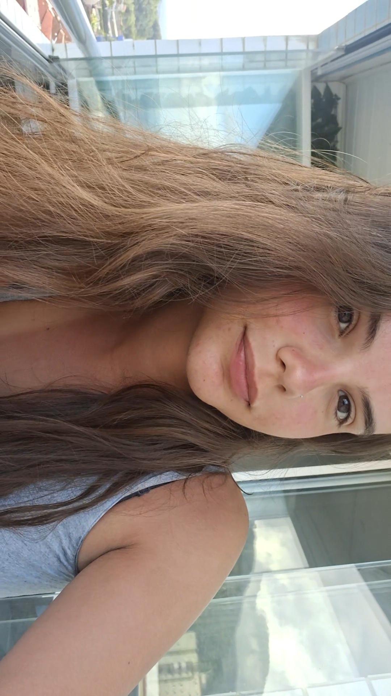
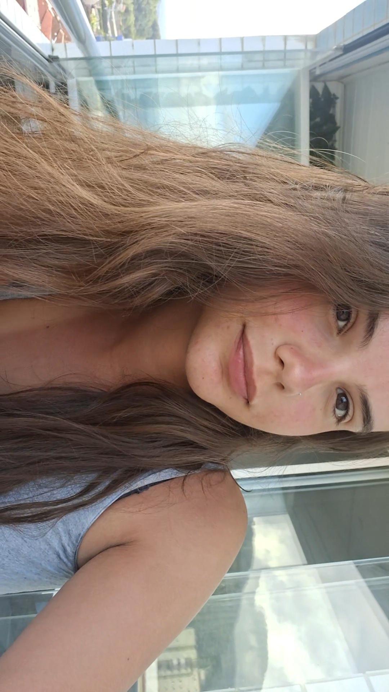
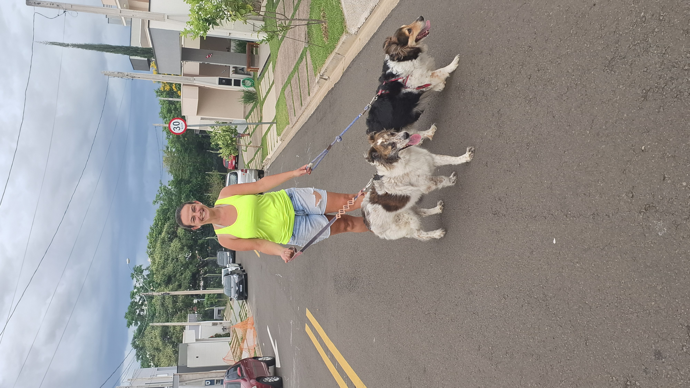
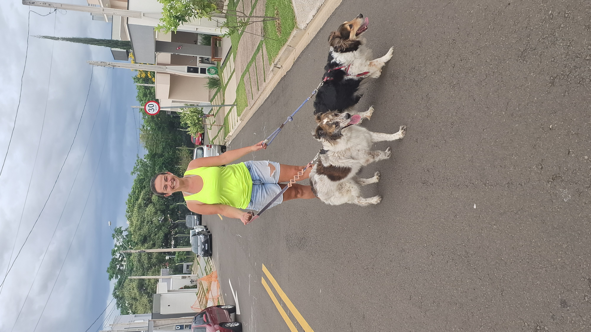

 

Hobbies
Minhas atividades favoritas inluem ir à praia, acho que lá é o meu lugar favorito de todos, onde eu sinto paz, me acalmo e aprecio poder do Altíssimo. Minhas pessoas favoritas do mundo são minha família, onde infelizmente por conta das circunstância não posso ver todos os dias, porém sempre matemos contato. Adoro sair com meu namorado, assistir filmes e principalmente, brincar com meu gato, Will.
Trabalho
Como dito anteriormente, adoro andar de bike, justamente por conto do meu pai ter uma loja de bike, na qual eu trabalho junto à ele. Trabalho lá desde meus 15 anos, onde acredito que foi essencial para possuir responsabilidade e amadurecimento.